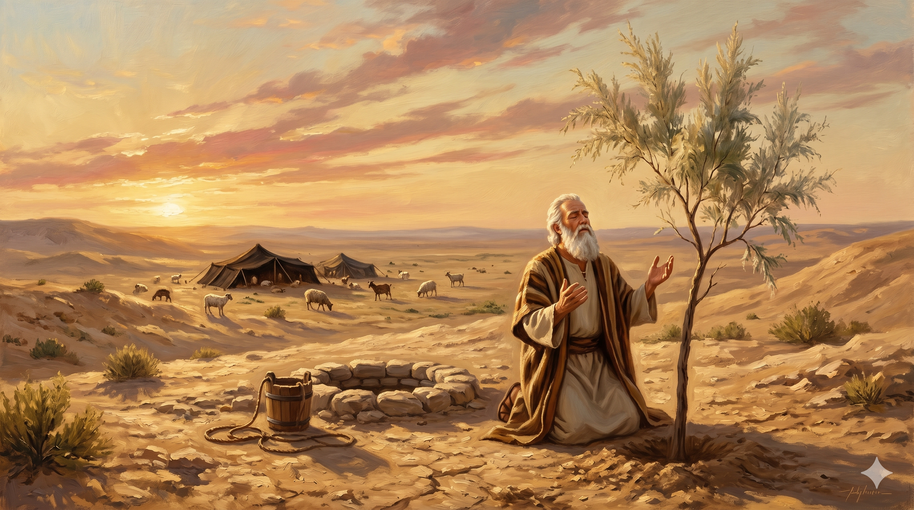

브엘세바의 우물가, 일곱 마리 암양을 증거로 놓고 블레셋 왕 아비멜렉과 군대 장관 비골 앞에서 언약을 맺는 아브라함 — 한낮의 광야에 먼지가 이는 엄숙한 순간
그 때에 아비멜렉과 그 군대 장관 비골이 아브라함에게 말하여 이르되 네가 무슨 일을 하든지 하나님이 너와 함께 계시도다 … 아브라함이 일곱 암양 새끼를 따로 놓으니 … 두 사람이 거기서 서로 맹세하였으므로 그 곳을 브엘세바라 이름하였더라 … 아브라함은 브엘세바에 에셀 나무를 심고 거기서 영원하신 여호와의 이름을 불렀으며 — 창세기 21:22, 28, 31, 33
이스마엘을 광야로 떠나보낸 직후, 본문은 전혀 다른 장면으로 이어집니다. 블레셋 땅을 다스리던 아비멜렉이 군대 장관 비골과 함께 아브라함을 찾아와 이렇게 말합니다 — "네가 무슨 일을 하든지 하나님이 너와 함께 계시도다." 이방의 왕이 먼저 알아차렸습니다. 아브라함의 삶에는 감출 수 없는 하나님의 손길이 드리워져 있었던 것입니다. 아비멜렉은 그 사실이 무섭기도 하고 고맙기도 하여 "우리 사이에 거짓됨이 없기를" 바라며 언약을 청합니다. 여기서 놀라운 점은, 아브라함이 먼저 나서서 그간의 묵은 억울함을 꺼낸다는 사실입니다. "당신의 종들이 나의 우물을 늑탈하였나이다." 광야에서 우물은 생명입니다. 그 우물을 빼앗기고도 말없이 참아 왔던 아브라함은, 언약을 맺기 전 먼저 관계의 진실부터 바로잡습니다. 축복이 임한 사람일수록 갈등을 덮지 않고 정직하게 꺼내어 해결합니다.
아브라함은 양과 소 중에서 특별히 일곱 마리 암양 새끼를 따로 떼어 놓습니다. 히브리어에서 '일곱(쉐바)'은 '맹세(샤바)'와 어근이 같아, 이 의식은 말 그대로 "일곱으로 맹세한 자리"가 됩니다. 그래서 그 땅의 이름이 브엘세바 — '맹세의 우물', 혹은 '일곱의 우물' — 이 되었습니다. 언약이 맺어진 뒤 아브라함은 그 자리에 에셀 나무(tamarisk)를 심습니다. 에셀은 깊이 뿌리내리고 수백 년을 사는, 사막의 품격 있는 나무입니다. 떠돌이처럼 살던 그가 "이 땅에 오래 서 있을 그늘을 심는" 순간이었습니다. 그리고 그는 거기서 '영원하신 여호와(엘 올람)'의 이름을 부릅니다. 아브라함이 사용한 하나님의 이름 가운데 "영원하신" 하나님이라는 호칭은 여기서 처음 등장합니다. 하루하루를 걱정하던 나그네의 입술에서, 이제 "영원"이라는 단어가 흘러나오기 시작합니다.

언약이 끝난 뒤, 브엘세바 우물가에 에셀 나무를 심고 두 손을 들어 '영원하신 여호와(엘 올람)'의 이름을 부르는 아브라함
세상 사람들이 먼저 알아봅니다. "당신이 하는 모든 일에 하나님이 함께하시는 것 같다" — 우리 삶에서 이런 고백을 이끌어내는 일상이 되기를 구합시다. 요란한 간증이 아니라 꾸준한 정직함과 평화로움이, 먼저 이웃의 입을 열게 합니다. 그런 순간이 오면 아브라함처럼 정직하게 꺼낼 것은 꺼내 해결하십시오. 억울한 일을 계속 쌓아 두면 관계는 끝내 곪고, 언약 같은 중요한 자리에서 진실을 말할 힘을 잃게 됩니다. 축복이 임한 사람은 갈등을 회피하는 사람이 아니라, 겸손하고도 분명하게 진실을 말할 줄 아는 사람입니다.
그리고 당신의 삶에도 에셀 나무를 심으십시오. 오늘 당장의 결과를 위한 나무가 아니라, 수십 년 뒤 누군가가 그 그늘 아래 쉬게 될 나무 말입니다. 자녀를 위한 신앙의 습관, 후배를 위한 정직한 원칙, 공동체를 위한 기도의 자리 — 모두 에셀 나무입니다. 오늘의 아브라함처럼 "영원하신 하나님"을 부르며 심으십시오. 나그네의 일정이 아무리 짧아도, 심어 둔 에셀 나무는 하나님의 시간 안에서 오래 자랍니다. 성도의 하루는 영원과 맞닿아 있으며, 그 하루에 심은 작은 나무 한 그루가 다음 세대의 우물가가 됩니다.
이방인도 알아볼 만큼 하나님이 함께하시는 삶,
억울함을 덮지 않고 정직하게 풀어내는 용기,
영원하신 하나님을 부르며 오늘 한 그루 에셀 나무를 심는 — 그것이 아브라함의 후예입니다.